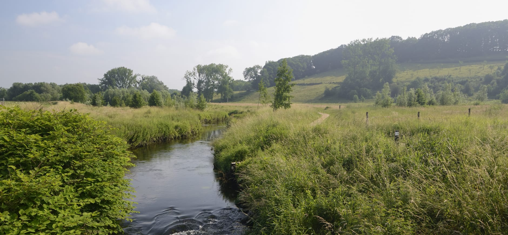

Feiten
- Geleen staat bekend om zijn glasindustrie.
- De stad ligt in het hart van Zuid-Limburg.
- Geleen heeft een rijk verenigingsleven.
- De stad is omgeven door prachtige natuurgebieden.
- Geleen is goed bereikbaar met zowel de auto als het openbaar vervoer.
Geleenbeekdal
Het Geleenbeekdal is een prachtig natuurgebied waar je heerlijk kunt wandelen en fietsen.
Gelaender Kirmes
De Gelaender Kirmes is een groot en gezellig kermisfeest dat jaarlijks plaatsvindt in Geleen. Het is een van de grootste kermissen in het zuiden van Nederland en trekt veel bezoekers uit de regio.
Danikerbos
Het Danikerbos is een bos dat de Geleenbeek flankeert. Aan de ene zijde ligt een grote visvijver en aan de andere zijde beklim je de Danikerberg. Deze heuvel is het hoogste punt in het gebied en was vroeger een grimmige plek. Hier werden leden van de beruchte roversbende, de Bokkenrijders, opgehangen.
Schaatsbaan Laco Geleen
Laco Geleen is een populaire bestemming voor schaatsliefhebbers in Limburg. Het biedt een unieke combinatie van een overdekte ijsbaan en een buitenbaan, waardoor je het hele jaar door kunt genieten van het schaatsen. Ook is dit de thuisbasis van de Smoke Eaters.